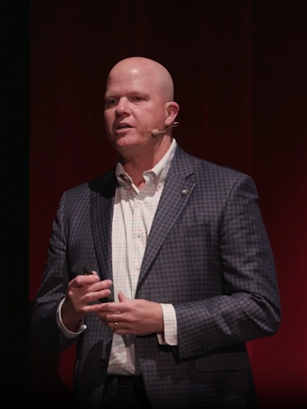

<section class="better-section">
  <div class="better-container">

    <!-- Left: Image (Web only) -->
    <div class="better-left desktop-image">
      <div class="better-image-wrapper">
        
      </div>
    </div>

    <!-- Right: Content -->
    <div class="better-right">

      <h2 class="better-heading">There is a better way.</h2>

      <!-- Mobile Image (shows below heading on mobile only) -->
      <div class="better-left mobile-image">
        <div class="better-image-wrapper-mobile">
          
        </div>
      </div>

      <div class="better-body">
        <p class="better-text">
          David L. Schreiner, Ph.D., helps healthcare leaders retain and empower their most critical asset: their people.
        </p>
        <p class="better-text">
          A former President and CEO of a $500 million organization with over 1,000 employees, Dr. Schreiner combines real-world executive experience with a doctorate in values-driven leadership.
        </p>
        <p class="better-text">
          Using appreciative inquiry, he guides leaders to navigate complex challenges with optimism and trust in their teams. His approach strengthens cultures, retains top talent, and builds leadership systems that ensure both people and organizations thrive.
        </p>
      </div>

      <!-- CTA Buttons -->
      <div class="better-actions">
        <a routerLink="/about" class="btn-outline">Learn More</a>
        <a routerLink="/contact" class="btn-filled">Contact Dr. Schreiner</a>
      </div>

      <!-- Testimonial -->
      <blockquote class="better-quote">
        <p class="better-quote-text">
          "Dr. Schreiner reminds us of the difference we can make in people's lives when we choose to approach them with a mindset of abundance, appreciation, and love. I am grateful for David, his message, and his sincere desire to make healthcare better."
        </p>
        <footer class="better-quote-author">
          <strong>QUINT STUDER, Author of The Calling: Why Healthcare Is So Special</strong>
        </footer>
      </blockquote>

    </div>
  </div>
</section>